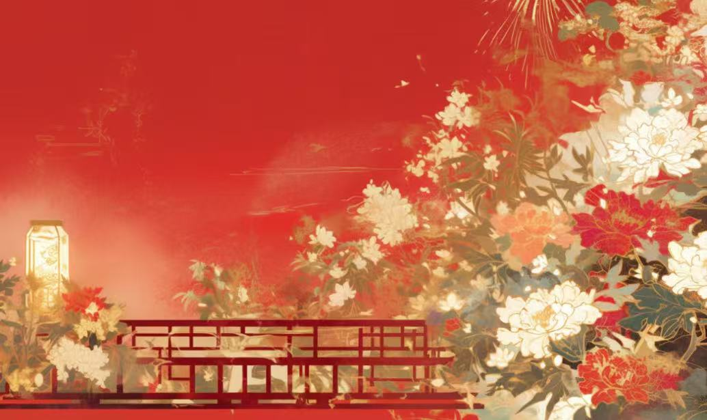
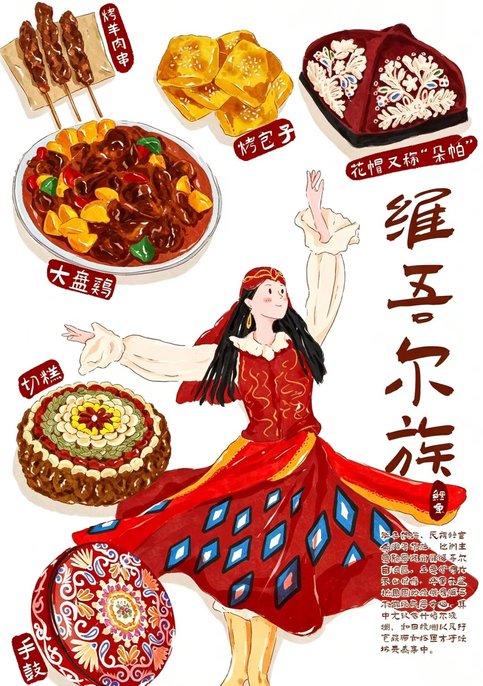
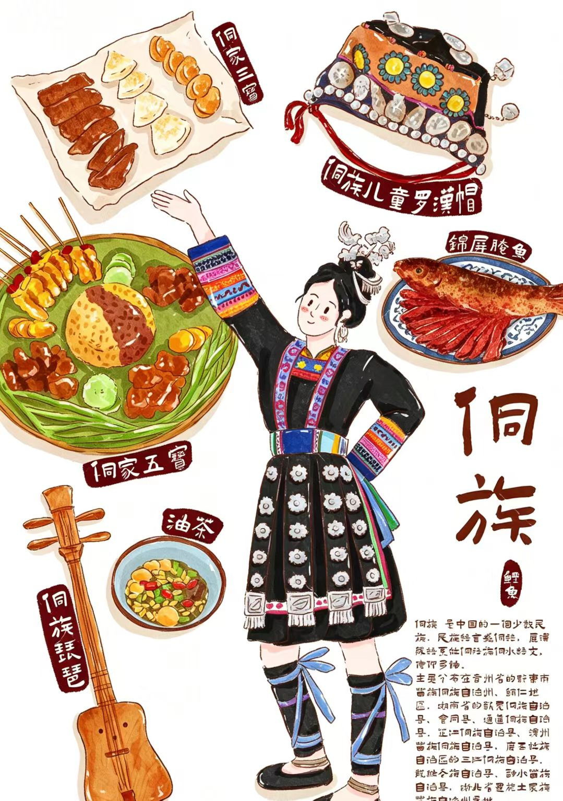
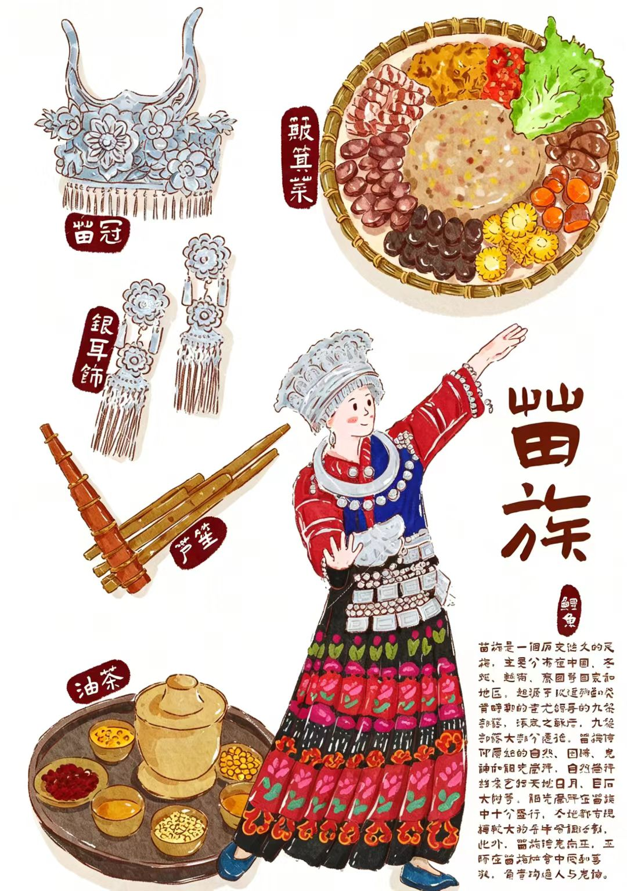
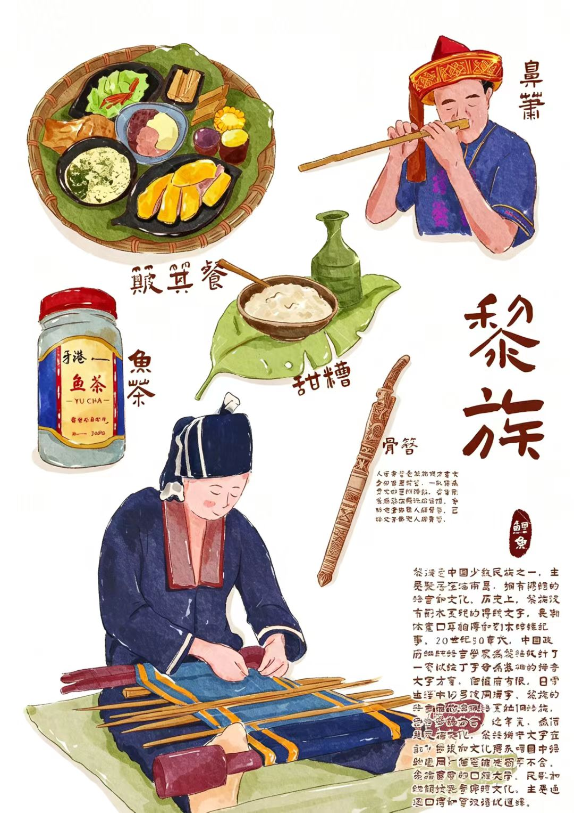
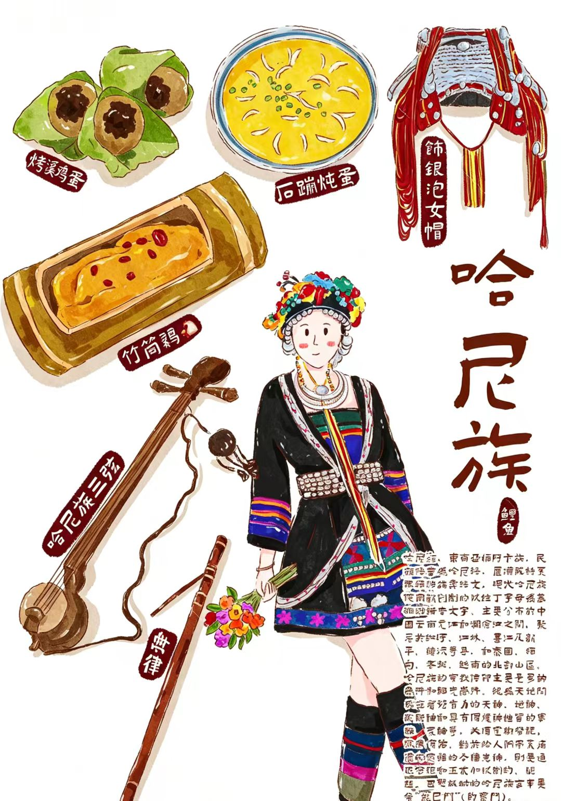
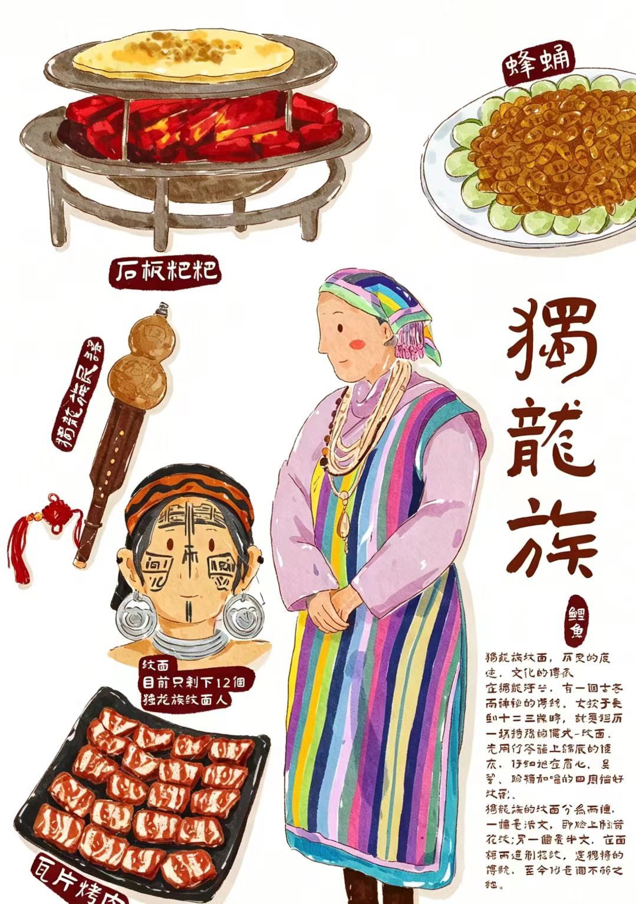

社区石榴籽 · 邻里一家亲
冬日的凉州区火车站街惠民社区，巷陌间的“红石榴”标识格外醒目，邻里相聚话家常、各族群众共参与的温馨场景随处可见。近日，惠民社区成功入选第十二批全国民族团结进步示范区示范单位，实现武威市城市社区该类国家级荣誉“零”的突破。这份荣光，是社区以铸牢中华民族共同体意识为主线，创新“党建领治、居民自治、文化德治、平安法治、社会共治、服务善治”六治联动治理模式，用“微治理”撬动“大团结”的生动答卷，让“中华民族一家亲”的理念在惠民社区落地生根、开花结果。
党建引领的红色根基为民族团结筑牢发展底色，惠民社区培树“红色领航 金指惠民”党建品牌，5支“红石榴”志愿服务队穿梭在楼栋院落，“红色宣讲团”用家常话把党的民族政策送到群众心坎上。依托“社区大党委——网格党支部——楼栋党小组”三级组织体系，社区吸纳多方力量组建议事平台，80余件路面塌陷、老旧小区改造等民生难题在党建联席会议上得到妥善解决，党建引领的“向心力”汇聚成民族团结的“聚合力”。
“红石榴驿站”里，环卫工人歇脚喝水，邻里围坐商量事；“马中海红石榴工作室”内，矛盾纠纷在耐心调解中得到化解。社区创新的“七步议事法”，让46件群众烦心事、153起矛盾纠纷就地化解，“夕阳红”爱心队的退休老党员们化身老旧小区改造义务监督员，带动各族居民主动参与社区建设，居民自治的“基础网”织密了邻里守望的温情。
志愿服务
温暖同行
红星社区成立于2023年5月，其名称延续自上世纪 60 年代的 “红星公社”，传承红色文脉，寓意“闪闪红星心向党”。 辖区内居住着藏、汉、回等23个民族的万余名居民。 社区紧扣铸牢中华民族共同体意识工作主线，创新推行“六微六融”特色治理模式，深耕互嵌式城市社区建设，推动民族团结进步创建与基层社会治理双向融合、一体推进。
走进红星社区，红石榴家园、青年人才驿站、红 “新”驿家、向日葵之家、梦想书吧、运动小站等服务阵地错落排布。 “这里环境安静，配套又全，能让人沉下心来复习。” 备考学子达娃 央金已经在“青年人才驿站”里度过了六个夜晚。 这处“微空间”，不仅解决了她的临时住宿难题，更让她感受到了社区服务的温度。
“青年人才驿站”的便利，只是红星社区深耕便民服务的一个缩影。 依托社区各类便民微服务阵地，社区精准对接各族群众需求、做实暖心便民服务，不少群众专程送来感谢信，致谢社区的贴心服务。
一件件民生小事、一次次暖心互动，让基层治理饱含民生温度。 在这里，一个个便民微服务阵地，不仅是学习园地、就业站点，更是成为了拉近邻里距离、促进各民族交往交流交融的“连心桥”。
基层治理的温度，也体现在一日三餐与节令共庆里——各族群众围坐一桌、互赠手艺、共话家常，正是社会融合最日常、也最真实的画面。
邻里餐桌 · 风味交融
在社区共餐、节令合拢宴与邻里互助中，感受各族交往交流交融
-

维吾尔族
巴扎里各族商贩与居民围坐分食，年轻人把刚出炉的馕饼、手抓饭递给邻里，一碗奶茶递到手中，便是互嵌社区里最日常的问候。节令聚会与日常购销同一张饭桌，把交往交流交融写进烟火日常。
-

侗族
鼓楼前摆起合拢宴，全寨各家端出酸鱼、糯米饭与油茶，与四方来客同席共餐。歌声起、美酒敬，邻里与远客围桌拉家常，共享的餐桌成为村寨里最热络的交往场，情谊在一张长桌上慢慢升温。
-

苗族
苗寨节庆的长桌宴从寨门排到鼓楼，各族亲友与访客同坐一条长席。敬酒、对歌、共饮一碗米酒，老幼同席、主客同乐，把社区的欢喜与对各族同胞的情谊，都盛在这一张张接连摆开的饭桌上。
-

黎族
黎族村寨里，各家互赠竹筒饭与鱼茶，妇孺结伴制作山栏酒，手艺在一餐一饭间传给邻里。节日摆起长桌，不同族裔的住户围坐共食、分工备菜，互嵌式社区里的互助与守望，就融进每一顿邻里便饭。
-

哈尼族
哈尼族长街宴从寨头摆到寨尾，上百张桌子接连成席，本寨与邻近村寨的各族群众同享丰收喜悦。大家端菜搭台、斟酒互敬，一席长宴连着十里邻里，也把守望相助的情谊系在云端梯田间的共同饭桌上。
-

独龙族
独龙江峡谷深处，石板粑粑与菌汤常出现在待客午宴里——主人邀邻里与远方来客同桌而食，妇女们互教手艺、孩童在一旁递盘添碗。以饭桌为媒，一顿简单的家宴，便把峡谷深处的真诚与热情，化作跨越山海的邻里之谊。